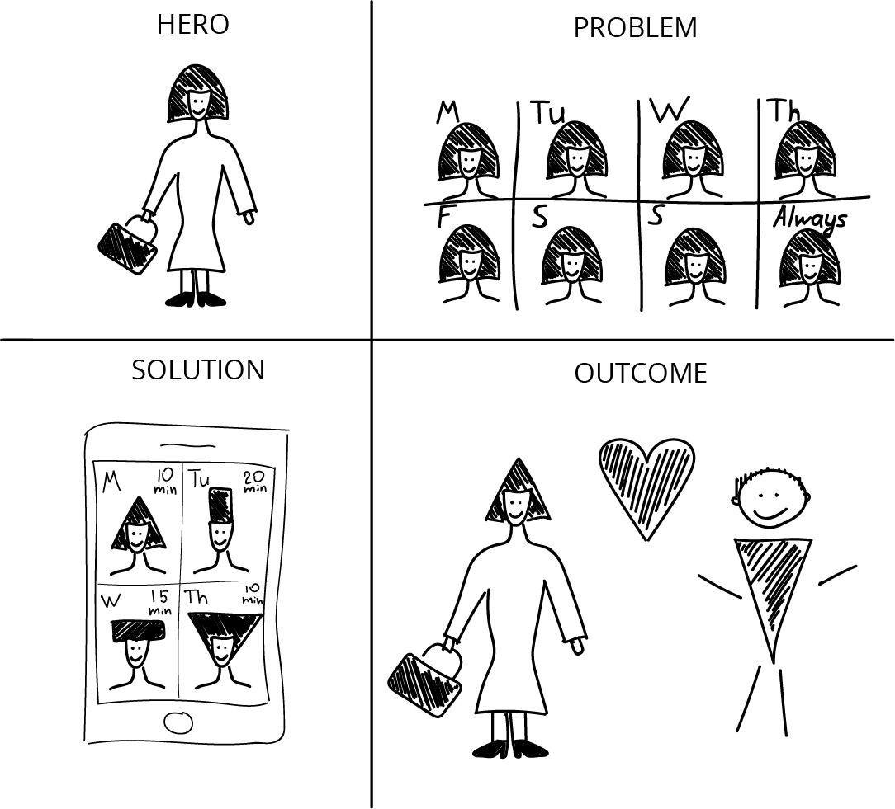
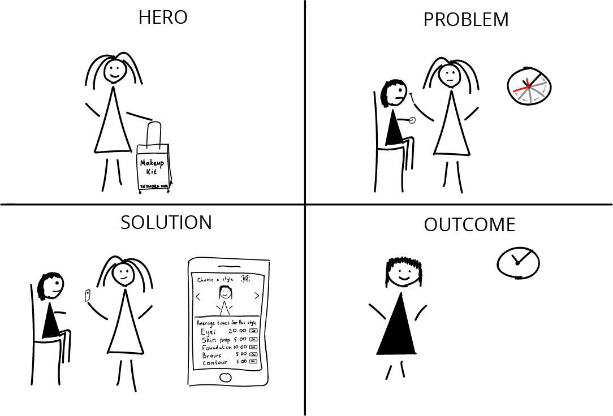
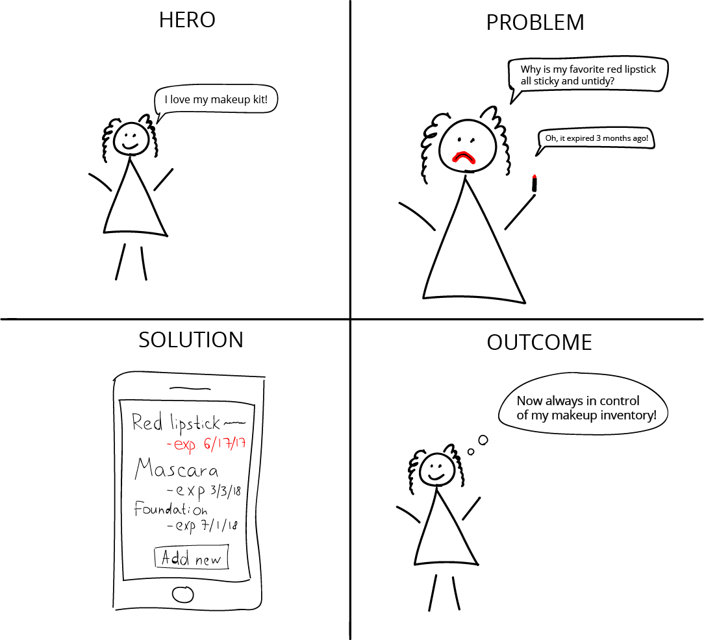
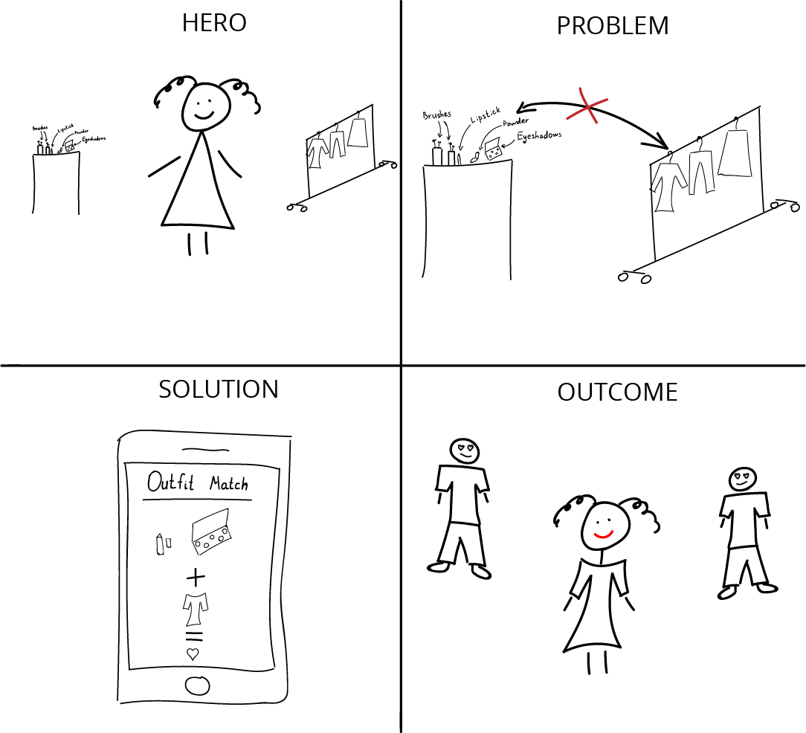
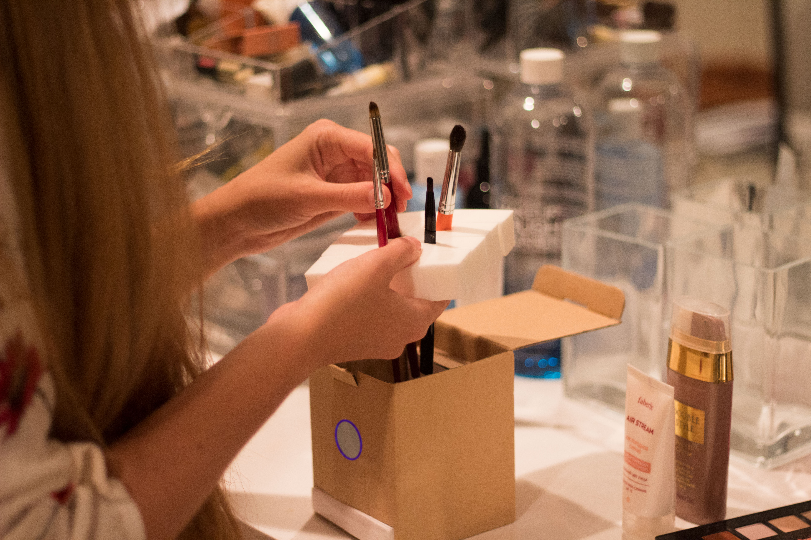
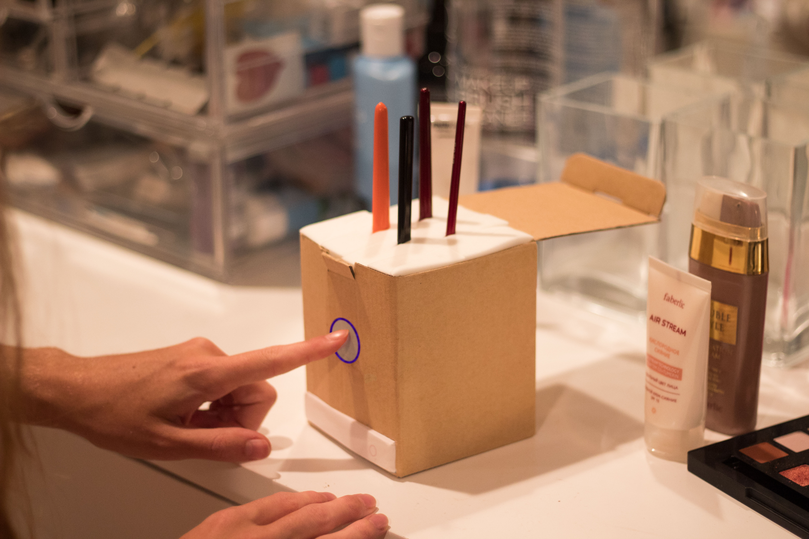

I have graduated as a Psychologist, got a degree in Human Resources Management, then went to a school for Makeup Artistry and educated myself in Fashion Design; I have got to work in every role, generally having to wear many different hats.
Now I have finally decided to put all my expertise together and start a journey of becoming User Experience Designer, combining my biggest passions: psychology and design.
I am excited to share some of my works below.
Got a question? Feel free to reach out to me on
LinkedIn.
Time-Based Storytelling
On the very phase step of my project I've gone through several ideation sessions to get inspired and get ideas for changes.
Everything starts with a story. I've written and drawn 4 stories about problems of people as it related to Beauty Industry.
First story is all about the people who are tired to have the same exact look every single day; "Beauty Schedule" application is a solution to that – it gives an idea for a different look every day and a tutorial on applying it.
The next story is about what's actually very often happens with makeup artists: they underestimate time they need to do a makeup for a client, which leads to inconvenient situations for both the makeup artist and for the client. "Makeup Assistant" is the application with smart timer that keeps the makeup artist on track.
"Makeup Inventory" is an application that helps professional makeup artists and makeup enthusiasts to keep track on their beauty case inventory. It sends a notifications when some of your products are close to an expiration date to make sure you are not using a bad products.
The last story is about a lady who don't know how to choose the right kind of makeup for each of her outfits. With "Outfit Match"'s smart system she can be sure that her look is perfect and complete!
The first app's idea, "Beauty Schedule", was also explained in a short commercial.
Exploring and creating stories that became the foundation for this storytelling exercise allowed me to find the opportunity areas to make beauty industry even more efficient and enjoyable than it is now.




Physical Prototyping and Rendering: Portable Brush Cleaning Station
After getting inspired by tons of ideas during ideation session I decided to prototype one of the ideas which can actually improve makeup industry. Continuing solving problems for makeup artist and makeup enthusiasts I've created a prototype of an innovative Makeup Brushes Cleaning Station that allows you to clean up to 30 brushes in only 5 minutes without your active participation, – while manually it takes a couple of minutes for every brush individually, – and also keep them organized while you are using them. I've drawn blueprints to describe the idea of the Station and also took in-studio and in-environment styled photos of the prototype, and also rendered some of them.
Experience of working as a makeup artist helped we to build the prototype based on real pain points makeup artists have these days. Ability to put real makeup brushes into the Station allows everybody who deals with the prototype be able to better understand how it supposted to work and how it's going to look like in real life.
Prototyping is always very enjoyable part of the design process because I have a chance to get out of my laptop and make something with my hands – and it's something that is easy to test with users going forward!


Interface Development: Virtual Hairstylist App
One of the first Stories I've written and drawn – Beauty Schedule – inspired me to develop an Interface of a mobile application that allows women to get customized tutorials for hairstyling every day. I've skethed 4 screens of the app and designed them.
I also created the tool for makeup and hairstyling professionals – a Calculator of time needed for timing while preparing for big evens like weddings, when an artist can have up to 10 clients in a row. As inputs it receives number of guests who need hairstyling and makeup, and number of complete makeup brush sets the artist has; as an output, the user receives the amount of time the job will take. It will help the bride and her wedding organizer team to know the time when the team should start to work. Try out the calculator here.
User Experiment: Virtual Hairstylist App AR
As a final step of the project I performed User Testing of my "Virtual Hairstylist" application with an extra feature: you don't just see different tutorials on how to create a different hair style, but you can also virtually try hair-pieces from Zub Design online store, and order them with 2 hour delivery!
User Experiment phase turned out to be very helpful and insightful, many adjustments and slight modifications to the interface were made as a result of users' feedback.


@2x.png)